Lead Finder - Lead Generation from the Map
Lead generation from the map: type '5 km around Kemang, coffee shops' and import businesses from OpenStreetMap or Google Places as contacts or CRM leads.
- Price
- $69
- Odoo versions
- 17.0
- 18.0
- 19.0
- 20.0
- Technical name
tamadoo_company_lead_finder- License
- OPL-1

Text and screenshots below are from the Odoo 20.0 version of this module.
Type what you are looking for in a sentence, in English or Indonesian, and get the businesses around that place from OpenStreetMap (free, no key) or Google Places. Import them as contacts or CRM leads in one click. Companies already in Odoo are recognised, not duplicated.
From a sentence to leads
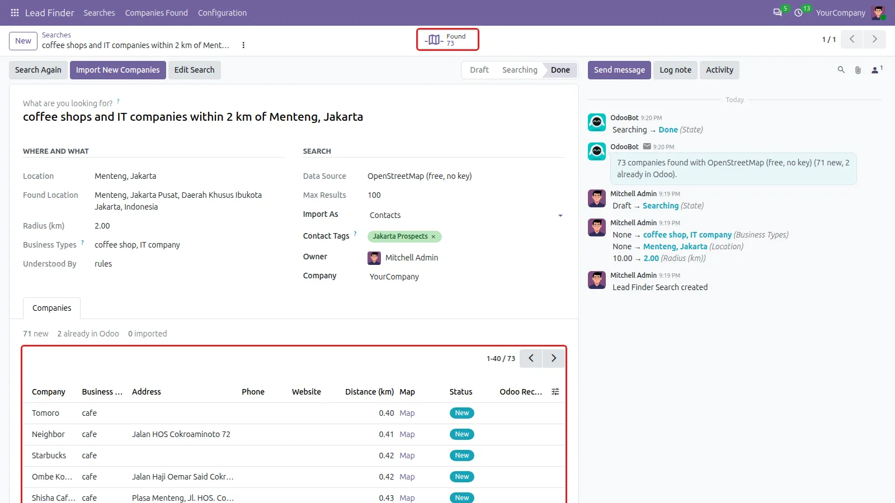

What you get
Ask in a sentence
"coffee shops and IT companies within 2 km of Menteng, Jakarta" or "kafe dan bengkel di Kemang radius 1 km": location, radius and business types are read from the sentence. Built-in English / Indonesian parser, or Gemini with your key.
Free OpenStreetMap source
Works out of the box, no API key and no cost. Several OpenStreetMap servers are tried in turn when one is busy.
Google Places and Outscraper
Add a key for Google Places (with a deep, cell-by-cell mode beyond Google's 60 results per query) or Outscraper for richer phone, website and rating data.
No duplicates
A business whose website, phone number (any format) or name matches a top-level contact (or CRM lead) already in Odoo is flagged and linked, not created again.
Contacts or CRM leads
Import all or selected businesses as tagged top-level contacts, or as CRM leads assigned to the search owner.
Distance and map
Every result shows its distance from the centre and a map link; sorted nearest first.
Runs in the background
Searches run as a background job within a time budget; you get an Odoo notification when results are in.
Per-user searches
Users see their own searches; Lead Finder administrators see all and manage the API keys.
Step by step
Say what you are looking for
Lead Finder → Searches → New. One sentence is enough; choose the source and whether to import as contacts or CRM leads, and optional tags.
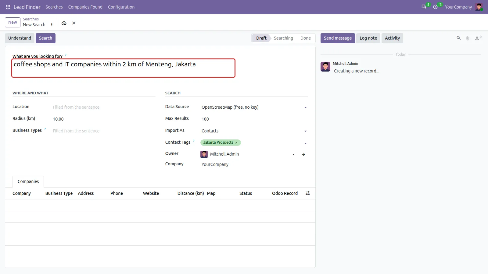
Check what was understood
Understand fills in the location, radius and business types. Edit any of them before searching.
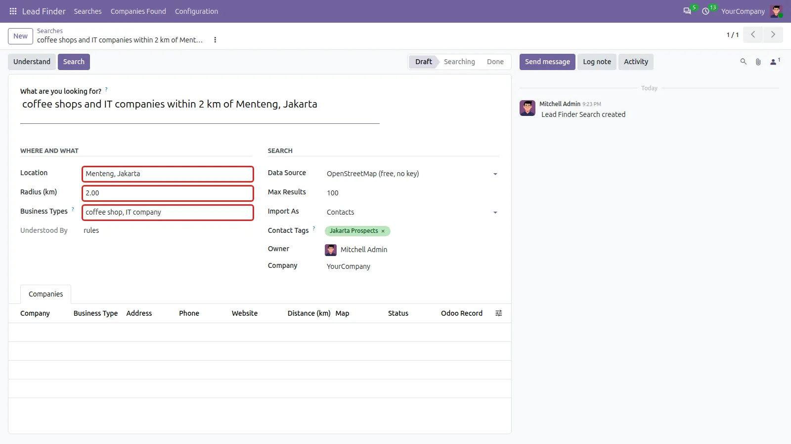
Search in the background
The place is located on the map and the search runs as a background job.
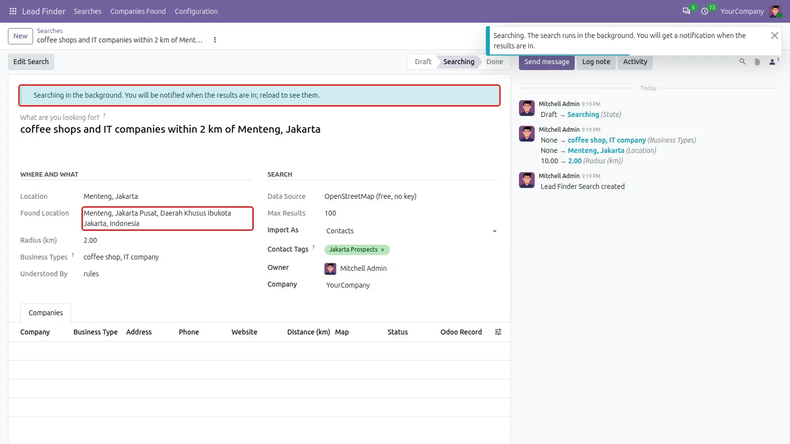
Results, nearest first
Address, phone, website, distance and map link. Companies already in your Odoo are marked and linked. You are notified in the chatter.

Import what you want
Import every new company, or select some in Companies Found and click Import Selected.
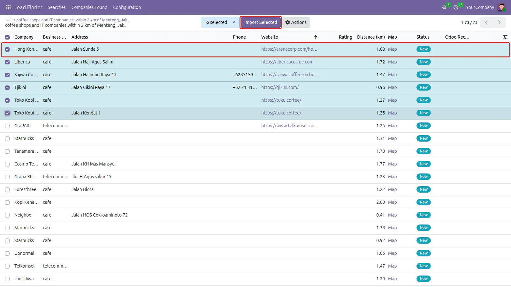
Imported in one click
Created as top-level contacts with the 'Lead Finder' tag plus your own tags. Odoo 20 marks a contact as a company once it has a Tax ID, so add the Tax ID when you know it.
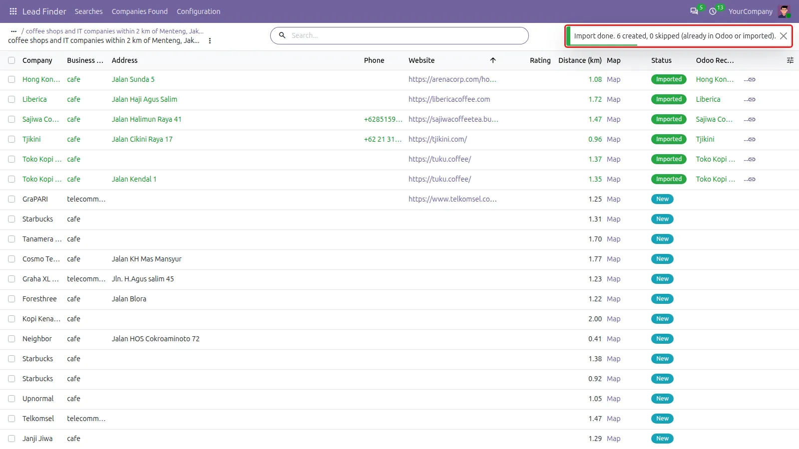
All companies found
Filter new / already in Odoo / imported, with phone, website or email, and group by search or business type.
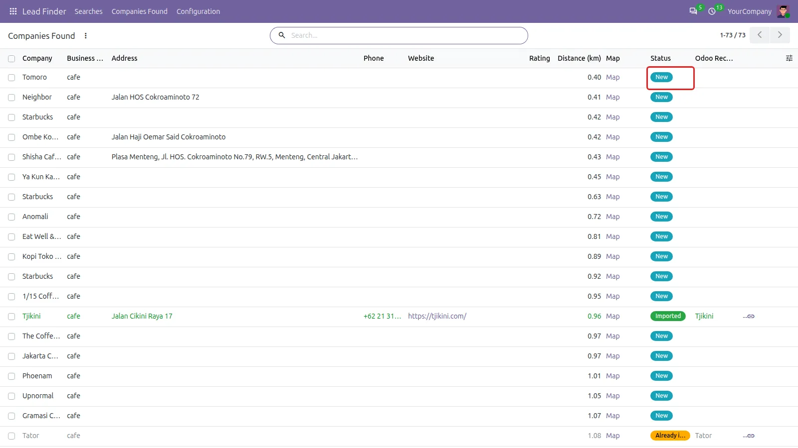
A ready contact
Address, phone, email, website and tags filled in; the note says where and how it was found.
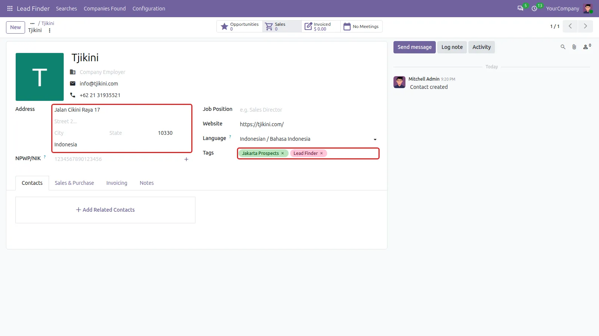
Indonesian sentences, CRM leads
"kafe dan bengkel di Kemang, Jakarta Selatan radius 1 km" is understood the same way. Import As: CRM Leads.
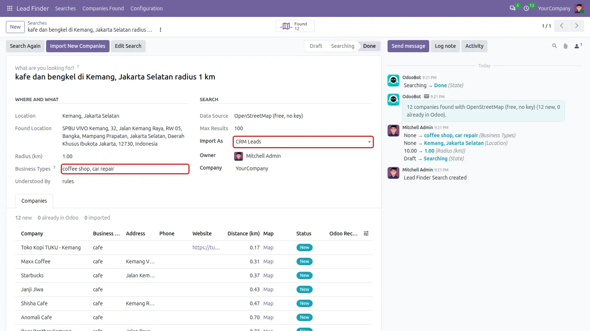
Straight into the pipeline
Leads (or opportunities, depending on your CRM settings) assigned to the search owner.
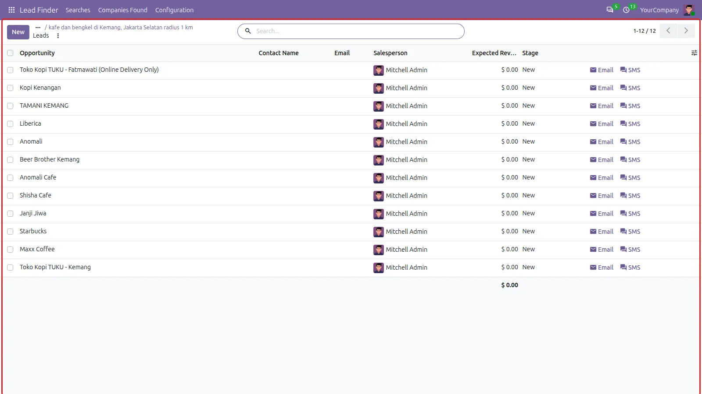
Every search kept
Location, radius, business types, source, companies found and imported per search.
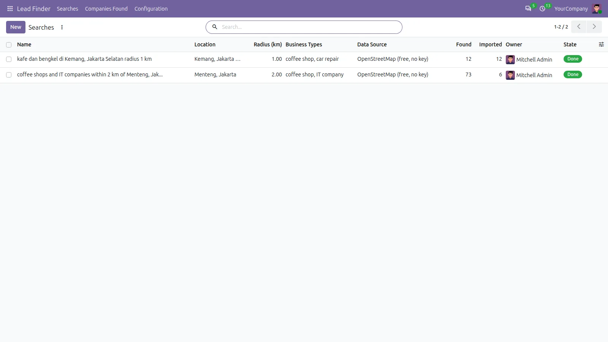
Settings
OpenStreetMap servers, Google Places and Outscraper keys, and an optional Gemini key for free-form sentences.
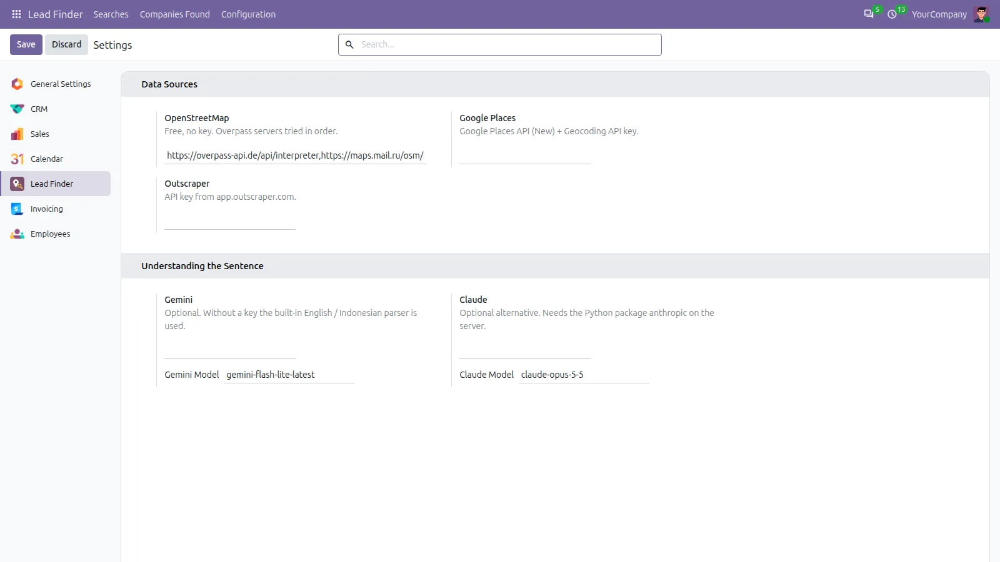
Set up in 2 minutes
- Install the module (depends on Contacts; CRM is optional, for importing as leads).
- Give users the Lead Finder / User access right (administrators have it).
- Lead Finder → Searches → New: type a sentence, Search, then Import New Companies.
- Optional, Lead Finder → Configuration → Settings: Google Places / Outscraper keys for more data, a Gemini key for free-form sentences.
OpenStreetMap data © OpenStreetMap contributors (ODbL); contact details in OpenStreetMap are often incomplete, Google Places / Outscraper return more phones, websites and ratings (their API usage is billed by them). The module never scrapes Google Maps pages: it uses official or licensed APIs only.
Get Lead Finder
Questions before buying? Write to tama.odoo@gmail.com.